콘크리트산업기사 (2017-05-07 기출문제)
1과목: 콘크리트재료 및 배합
1. 콘크리트에는 혼화제를 사용하지 않더라도 콘크리트 속에 자연적으로 포함되는 부정형한 기포가 있는데, 이것의 명칭으로 적합한 것은?
- 연행공기(entrained air)
- 갇힌공기(entrapped air)
- 겔공극(gel pore)
- 모세관공극(capillary pore)
(정답률: 78%)

2. 시멘트의 강도시험(KS L ISO 679)에 사용하는 모르타르의 배합비(시멘트：표준사)로서 옳은 것은?
- 1：1
- 1：2
- 1：3
- 1：4
(정답률: 91%)
3. 서중 콘크리트 시공 시 레디믹스트 콘크리트의 거리가 멀 때, 수조 및 대형구조물 등 연속타설 시 사용되는 콘크리트에 적합한 혼화제는?
- AE감수제
- 지연제
- 고성능 감수제
- 발포제
(정답률: 76%)
4. 보통 포틀랜드시멘트의 주요 조성광물 중 함유비율이 가장 큰 것은?
- C2S
- C3A
- C3S
- C4AF
(정답률: 69%)
5. 콘크리트의 혼합에 사용되는 물 중 시험을 실시하지 않아도 사용할 수 있는 것은?
- 호숫물
- 지하수
- 슬러지수
- 상수돗물
(정답률: 85%)
6. 콘크리리트용 부순 굵은골재의 절대건조밀도는 2.6g/cm3이고, 시료의 단위용적질량은 1,560kg/m3이다. 이 골재의 입자 모양 판정실적률(%)은?
- 45%
- 50%
- 55%
- 60%
(정답률: 61%)
7. 보통포틀랜드시멘트의 응결에 대한 일반적인 설명으로 틀린 것은?
- C3A가 많을수록 응결은 빨라진다.
- 시멘트 응결시험의 기구로 비카트장치와 길모아장치가 사용된다.
- 석고의 첨가량이 많을수록 응결은 지연된다.
- 시멘트의 응결시간은 초결이 2.5∼5시간, 종결이 10∼20시간 정도이다.
(정답률: 56%)
8. 콘크리트 배합설계에서 단위수량을 선정하는 내용 중 잘못된 것은?
- AE제 및 AE감수제를 사용하면 단위수량이 감소된다.
- 고로슬래그의 굵은골재를 골재로 사용하면 강자갈의 경우보다 단위수량이 감소된다.
- 쇄석을 굵은골재로 사용하면 강자갈의 경우보다 단위수량이 증가된다.
- 소요의 워커빌리티 범위에서 가능한 한 단위수량이 적게 되도록 시험에 의해 정한다.
(정답률: 55%)
9. 설계기준압축강도(fk)가 21MPa일 때 이 콘크리트를 제조하기 위한 배합강도(fck)는? (단, 압축강도 시험의 기록이 없는 경우)
- 28MPa
- 29.5MPa
- 31MPa
- 32.5MPa
(정답률: 60%)
10. 콘크리트 배합에 있어서 단위수량이 170kg/m3, 단위 시멘트량이 315kg/m3, 공기량이 4%일 때 단위 골재량의 절대 부피는? (단, 시멘트의 밀도는 3.15g/cm3이다.)
- 690ℓ
- 730ℓ
- 750ℓ
- 770ℓ
(정답률: 52%)
11. 보오크사이트와 석회석을 원료로 분쇄, 조합하여 제조한 시멘트로 초조강성 및 높은 발열 특성으로 긴급공사나 한중공사 시 적합하며 내화물용으로 많이 사용되는 시멘트는?
- 내황산염시멘트
- 조강시멘트
- 알루미나시멘트
- 중용열시멘트
(정답률: 65%)
12. 혼화재의 품질시험에서 아래 표의 내용을 무엇이라고 하는가?
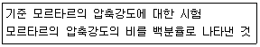
- 플로값 비
- 활성도 지수
- 안정도
- 길이변화비
(정답률: 73%)
13. 금속재료의 인장시험에 의한 파단 연신률(%)을 구하는 식으로 옳은 것은? (단, ℓo은 시험편의 양 파단면의 중심선이 일직선상에 있도록 주의하여 파단면을 접촉시켜 측정한 표점간 거리(mm)이며, ℓ는 표점거리(mm)이다.)
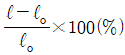
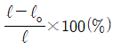
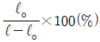
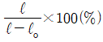
(정답률: 64%)
14. 제빙화학제에 노출된 콘크리트에서 플라이애시를 시멘트 재료의 일부로 치환하여 사용하는 경우 최대 몇 % 이하로 하여야 하는가? (단, 시멘트와 혼화재 전체에 대한 혼화재의 질량백분율(%)로 표시)
- 10%
- 25%
- 35%
- 50%
(정답률: 48%)
15. 시멘트의 수화에 영향을 주는 인자들에 관한 설명으로 옳은 것은?
- 시멘트의 분말도가 높을수록 수화반응 속도가 빨라져서 응결이 빨리 진행된다.
- 단위수량이 클수록 응결이 빠르게 진행된다.
- 포졸란계 흔화재료가 사용된 경우 CaO성분이 줄어들므로 수화반응이 촉진된다.
- 온도가 높을수록 응결이 지연된다.
(정답률: 65%)
16. 단위용적질량이 1.8t/m3인 굵은골재의 밀도가 3.0t/m3일 때 이 골재의 공극률은 얼마인가?
- 40%
- 45%
- 55%
- 60%
(정답률: 55%)
17. 콘크리트 배합에 대한 설명으로 틀린 것은?
- 시방배합에서 굵은골재는 5mm 체에 전부 남는 것을 말한다.
- 콘크리트의 배합은 질량으로 표시하는 것을 원칙으로 한다.
- 콘크리트의 배합강도는 현장콘크리트의 품질변동을 고려하여 결정한다.
- 플라이애시를 사용하는 배합을 표시할 때 물-시멘트비와 물-플라이애시비를 각각 표시한다.
(정답률: 63%)
18. KS L 5110에 의하여 시멘트 비중시험을 실시한 결과, 르샤틀리에 비중병에 광유를 주입하고 측정한 눈금이 0.6mL이었다. 이 비중병에 시멘트 64g을 넣고 광유가 올라온 눈금을 측정한 결과 21.25mL를 얻었다. 시멘트의 비중은 얼마인가?
- 3.0
- 3.⑤
- 3.10
- 3.15
(정답률: 83%)
19. 절대건조 상태에서 350g의 잔골재 시료가 표면 건조포화 상태에서 364g, 공기 중 건조상태에서는 357g이 되었다. 이 시료의 흡수율은?
- 2%
- 3%
- 4%
- 5%
(정답률: 54%)
20. 콘크리트 배합설계에서 시방배합을 현장배합으로 고칠 때 고려해야 하는 사항이 아닌 것은?
- 현장의 잔골재 중에서 5mm 체에 남는 굵은골재량
- 현장골재의 함수 상태
- 혼화제를 희석시킨 희석수량
- 현장의 굵은골재 최대치수
(정답률: 63%)
2과목: 콘크리트제조, 시험 및 품질관리
21. 콘크리트를 제조할 때 각 재료 계량의 허용오차 중 혼화재의 계량 허용오차는?
- ±1%
- ±2%
- ±3%
- ±4%
(정답률: 77%)
22. 콘크리트의 품질관리에 대한 설명으로 틀린 것은?
- 콘크리트의 받아들이기 품질관리는 콘크리트를 타설하기 전에 실시하여야 한다.
- 워커빌리티의 검사는 굵은골재 최대 치수 및 슬럼프가 설정치를 만족하는지의 여부를 확인함과 동시에 재료 분리 저항성을 외관 관찰을 통해 확인하여야 한다.
- 내구성 검사는 공기량, 염소이온량을 측정하는 것으로 한다.
- 강도검사는 콘크리트의 압축강도 시험에 의해 실시하는 것을 표준으로 한다.
(정답률: 47%)
23. 실제로 시공된 콘크리트 자체의 품질을 구조물에 손상을 주지 않고, 콘크리트의 반발경도를 측정하여 압축강도를 추정하는 비파괴시험은 무엇인가?
- 공진법
- 슈미트 해머법
- 음속법
- 방사선법
(정답률: 93%)
24. 공기실 압력법에 의한 콘크리트의 공기량 시험방법에서 시료를 용기에 채우는 층수 및 각층 다짐횟수로 적합한 것은?
- 3층, 25회
- 2층, 25회
- 3층, 30회
- 2층, 20회
(정답률: 70%)
25. 콘크리트의 균열에 대한 설명으로 틀린 것은?
- 이형철근을 사용하면 균열폭을 줄일 수 있다.
- 인장측에 철근을 잘 배분하면 균열폭을 최소화할 수 있다.
- 철근의 부식정도는 균열폭이 문제가 아니라 균열의 수가 문제이다.
- 철근위치의 균열폭은 콘크리트 피복두께에 비례한다.
(정답률: 65%)
26. 콘크리트의 휨강도 시험에 150×150×530mm의 각주형 공시체를 사용하였을 때 최대하중이 30kN이었다면 이 콘크리트의 휨강도는? (단, 지간은 450mm이다.)
- 3.2MPa
- 3.6MPa
- 4.0MPa
- 4.4MPa
(정답률: 71%)
27. 레디믹스트 콘크리트 혼합에 회수수를 사용할 경우, 단위 슬러지 고형분율이 몇 %를 초과하면 안 되는가?
- 3%
- 4%
- 5%
- 6%
(정답률: 61%)
28. 아래의 표에서 설명하는 콘크리트 초기균열의 종류는?
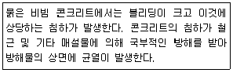
- 건조수축균열
- 침하균열
- 초기 건조균열
- 거푸집 변형에 의한 균열
(정답률: 83%)
29. 굳지 않은 콘크리트의 성질을 나타내는 용어를 설명한 것으로 틀린 것은?
- 반죽질기：물량의 다소에 따르는 반죽이 되고 진 정도
- 워커빌리티：반죽질기 여하에 따르는 재료의 분리되는 정도
- 성형성：거푸집에 쉽게 다져 넣을 수 있고, 거푸집을 제거하면 허물어지거나 재료가 분리되지 않는 성질
- 피니셔빌리티：굵은골재의 최대치수, 잔골재의 입도, 반죽질기 등에 의한 마무리하기 쉬운 정도
(정답률: 65%)
30. 계수값 관리도에 의해 품질관리를 할 때 결점수 관리도에 적용되는 이론은?
- 정규 분포이론
- 이항분포이론
- 카이자승 분포이론
- 포아송 분포이론
(정답률: 56%)
31. 다음 중 콘크리트의 워커빌리티 시험으로 사용되지 않는 것은?
- 흐름시험
- 다짐계수시험
- 구관입시험
- 블리딩시험
(정답률: 49%)
32. 콘크리트 쪼갬 인장강도 시험에 직경 150mm, 길이 300mm인 원주형 공시체를 사용한 경우 최대하중이 220kN이었다면, 인장강도는?
- 3.1MPa
- 3.5MPa
- 4.2MPa
- 4.5MPa
(정답률: 61%)
33. 안지름 25cm, 안높이 28.5cm의 용기로 블리딩시험을 한 경과 총 블리딩수가 78.5cc 이었다면, 블리딩량은 얼마인가?
- 0.16cm3/cm2
- 0.20cm3/cm2
- 0.26cm3/cm2
- 0.30cm3/cm2
(정답률: 63%)
34. 블리딩(bleeding)을 저감시키는 요인이 아닌 것은?
- 물-시멘트비가 클 때
- 응결시간이 빠른 시멘트를 사용할 때
- 분말도가 큰 시멘트를 사용할 때
- AE제, 감수제를 사용할 때
(정답률: 63%)
35. 콘크리트 제조를 위한 콘크리트 공시체에 대한 압축강도 시험결과 5개의 시험값이 다음과 같다면, 이 콘크리트 공시체의 표준편차는? (단, 불편분산의 개념에 의함)
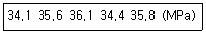
- 1.15MPa
- 1.03MPa
- 0.96MPa
- 0.89MPa
(정답률: 47%)
36. 콘크리트 공사에 있어 믹서 1대로 1일 60m3의 콘크리트를 비벼 내고자 할 때 준비하여야 할 믹서의 공칭용량은 다음 중 어느 것이 적당한가? (단, 1회 비벼내기 시간 4분, 1일10시간 실가동 조건으로 한다.)
- 0.32m3
- 0.40m3
- 0.48m3
- 0.52m3
(정답률: 58%)
37. 레디믹스트 콘크리트의 품질 중 슬럼프 50mm인 콘크리트의 슬럼프 허용 오차로서 옳은 것은?
- ±5mm
- ±10mm
- ±15mm
- ±20mm
(정답률: 66%)
38. 콘크리트의 압축강도 시험에 지름 100mm, 높이 200mm인 원주형 공시체를 사용하였을 때 최대압축하중이 437kN이었다면 압축강도는 얼마인가?
- 55.6MPa
- 56.6MPa
- 57.6MPa
- 58.6MPa
(정답률: 66%)
39. 콘크리트의 크리프(creep)에 영향을 주는 요소에 대한 설명으로 틀린 것은?
- 재하응력이 틀수록 크리프가 크다.
- 재하시의 지령이 작을수록 크리프가 크다.
- 조강시멘트를 사용한 콘크리트는 보통시멘트를 사용한 콘크리트보다 크리프가 크다.
- 부재의 치수가 작을수록 크리프 크다.
(정답률: 44%)
40. 콘크리트의 비비기에 대한 설명으로 틀린 것은?
- 비비기시간에 대한 시험을 실시하지 않은 경우 최소시간은 가경식 믹서일 때 1분 30초 이상을 표준으로 한다.
- 비비기는 미리 정해둔 비비기 시간의 3배 이상 게속하지 않아야 한다.
- 비비기를 시작하기 전에 미리 믹서내부를 모르타르로 부착시켜야 한다.
- 연속믹서를 사용할 경우 비비기 시작 후 최초로 배출되는 콘크리트부터 사용하여야 한다.
(정답률: 80%)
3과목: 콘크리트의 시공
41. 콘크리트의 고강도화 방법에 대한 설명으로 틀린 것은?
- 시멘트풀의 강도개선
- 양질의 골재이용
- 골재와 시멘트풀의 부착성 개선
- 단위 수량의 증가
(정답률: 67%)
42. 콘크리트의 표면마무리에 대한 설명으로 틀린 것은?
- 마모를 받는 면의 마무리는 물-결합재비를 작게 하여야 한다.
- 마무리 작업 후 콘크리트가 굳기 시작할 때까지의 사이에 일어나는 균열을 제거하고자 할 때 재진동을 해서는 안 된다.
- 특수한 마무리를 할 경우에는 단면손상, 조직의 느슨함 등 구조물 전체에 나쁜 영향을 주지 않도록 하여야 한다.
- 미리 정해진 구획의 콘크리트 타설은 연속해서 일괄작업으로 마쳐야 한다.
(정답률: 71%)
43. 댐 콘크리트와 관련된 용어로서 아래의 표에서 설명 하는 것은?
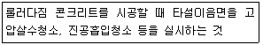
- 그린컷(green cut)
- 팝아웃(pop-out)
- 스케일링(scaling)
- 콜드 조인트(cold joint)
(정답률: 68%)
44. 콘크리트 공장제품의 양생에 많이 사용되는 방법으로서 고온ㆍ고압의 증기솥 속에서 상압보다 높은 압력으로 고온의 수증기를 사용하여 실시하는 양생은?
- 증기 양생
- 고주파 양생
- 온수 앙생
- 오토클레이브 양생
(정답률: 75%)
45. 내부 진동기를 이용하여 콘크리트의 진동다지기를 할 때 일반적인 삽입 간격은?
- 0.5m 이하
- 1.0m 이하
- 1.5m 이하
- 2.0m 이하
(정답률: 63%)
46. 매스 콘크리트로 다루어야 하는 구조물의 부재치수에 대한 일반적인 표준으로 옳은 것은?
- 하단이 구속된 벽조의 경우 두께 0.8m 이상인 경우 매스 콘크리트로 다루어야 한다.
- 넓이가 넓은 평판구조의 경우 두께 1.0m 이상인 경우 매스 콘크리트로 다루어야 한다.
- 하단이 구속된 벽조의 경우 두께 1.0m 이상인 경우 매스 콘크리트로 다루어야 한다.
- 넓이가 넓은 평판구조의 경우 두께 0.8m 이상인 경우 매스 콘크리트로 다루어야 한다.
(정답률: 76%)
47. 공장 제품 콘크리트의 강도는 재령 몇 일에서의 압축강도값으로 나타내는가? (단, 일반적인 공장 제품의 경우)
- 7일
- 14일
- 21일
- 28일
(정답률: 71%)
48. 일반 콘크리트의 시공에서 외기온도가 25℃ 미만인 경우 비비기로부터 타설이 끝날 때까지의 시간은 원칙적으로 얼마를 넘어서는 안되는가?
- 60분
- 90분
- 120분
- 150분
(정답률: 55%)
49. 댐 콘크리트 중 롤러다짐 콘크리트의 반죽질기 표준에 대한 설명으로 옳은 것은?
- VC 시험으로 20±10초를 표준으로 한다.
- VC 시험으로 50±10초를 표준으로 한다.
- 슬럼프 시험으로 측정하는 경우 10~20mm를 표준으로 한다.
- 슬럼프 시험으로 측정하는 경우 50~80mm를 표준으로 한다.
(정답률: 54%)
50. 섬유보강 콘크리트에 사용되는 시멘트계 복합 재료용 섬유에 대한 설명으로 틀린 것은?
- 무기계 섬유로는 강섬유, 유리섬유, 탄소섬유 등이 있다.
- 유기계 섬유로는 아라미드섬유, 폴리프로필렌섬유, 비닐론섬유 등이 있다.
- 섬유는 섬유와 시멘트 결합재 사이의 부착성이 양호하여야 한다.
- 섬유는 압축강도 및 전단강도가 커야 한다.
(정답률: 69%)
51. 고강도 콘크리트에 대한 설명 중 틀린 것은?
- 굵은골재는 실적률 50% 이상, 안정성 18% 이하이어야 한다.
- 잔골재는 절건밀도 2.5g/cm3 이상, 염화물이온량은 0.02% 이하이어야 한다.
- 콘크리트 타설 낙하고는 1m 이하로 하는 것이 좋으며, 콘크리트는 재료 분리가 일어나지 않는 방법으로 취급하여야 한다.
- 보통(중량) 콘크리트에서 설계기준압축강도가 40MPa 이상인 콘크리트이다.
(정답률: 47%)
52. 벽과 같이 높이가 높은 콘크리트를 급속하게 연속 타설하는 경우 나타나는 현상이 아닌 것은?
- 시공 이음 발생
- 상부 콘크리트의 품질 저하
- 재료분리 발생
- 수평철근의 부착강도 저하
(정답률: 55%)
53. 한중 콘크리트로 시공하여야 하는 하루의 평균기온 조건은 얼마인가? (단, 기준이 되는온도)
- 10℃ 이하
- 7℃ 이하
- 4℃ 이하
- 0℃ 이하
(정답률: 86%)
54. 방사선 차폐용 콘크리트의 슬럼프는 작업에 알맞은 범위 내에서 가능한 한 작은 값이어야 한다. 일반적인 경우의 슬럼프 값의 기준으로 옳은 것은?
- 100mm 이하
- 120mm 이하
- 150mm 이하
- 180mm 이하
(정답률: 69%)
55. 설계기준압축강도가 24MPa인 콘크리트를 사용한 슬래브 및 보의 밑면, 아치내면 거푸집은 타설 후 콘크리트의 압축강도가 몇 MPa 이상이 되면 해체 가능한가?
- 5MPa
- 14MPa
- 16MPa
- 24MPa
(정답률: 56%)
56. 아래 문장의 ()안에 들어갈 적절한 수치는?
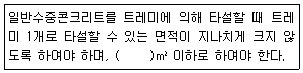
- 40
- 30
- 20
- 10
(정답률: 43%)
57. 서중 콘크리트에 대한 일반적인 설명으로 틀린 것은?
- 기온 10℃ 상승에 대하여 단위수량은 2~5% 증가한다.
- 콘크리트는 비빈 후 빨리 타설하여야 하지만 지연형 감수제를 사용한 경우에는 2시간이내 타설이 가능하다.
- 콘크리트를 타설할 때의 콘크리트 온도는 35℃ 이하이어야 한다.
- 하루 평균기온이 25℃를 초과할 것으로 예상되는 경우 서중 콘크리트로 시공하여야 한다.
(정답률: 49%)
58. 경량골재 콘크리트에 대한 설명으로 틀린 것은?
- 고유동 콘크리트의 경우 책임기술자와 협의하여 다짐을 생략할 수 있다.
- 경량골재 콘크리트는 보통 콘크리트에 비해 진동시간을 약간 길게 해 충분히 다져야 한다.
- 경량골재 콘크리트는 보통 콘크리트에 비해 진동기를 찔러 넣는 간격을 작게 하는 것이좋다.
- 진동 다지기를 하면 굵은 골재가 침하하고 모르타르가 위로 떠오르는 재료분리현상이 발생한다.
(정답률: 45%)
59. 콘크리트의 치기 작업에 대한 설명 중 콘크리트의 품질 확보를 위하여 바람직하지 않은 것은?
- 콘크리트를 직접 지면에 치는 경우에는 미리 깔기 콘크리트를 깔아두는 것이 좋다.
- 먼저 모르타르를 쳐서 널리 펴고 그 위에 콘크리트를 치면 곰보방지, 시공이음 일체화의 효과가 있다.
- 콘크리트를 2층 이상으로 나누어 칠 경우, 원칙적으로 하층의 콘크리트가 굳기 시작한 후 상층의 콘크리트를 쳐야 한다.
- 친 콘크리트는 거푸집 안에서 횡방향으로 이동시켜서는 안되며, 내부진동기를 써서 유동화 시키면서 콘크리트를 이동시켜서도 안된다.
(정답률: 79%)
60. 다음 중 일반 수중콘크리트 타설의 원칙에 어긋나는 것은?
- 물박이를 설치하여 물을 정지시켜 정수 중에 타설하여야 한다.
- 완전히 물막이를 할 수 없을 경우 유속을 50mm/min 이하로 하여야 한다.
- 콘크리트를 수중에 낙하시키지 않아야 한다.
- 콘크리트 면을 가능한 한 수평하게 유지하면서 소정의 높이 또는 수면 상에 이를 때까지 연속해서 타설하여야 한다.
(정답률: 60%)
4과목: 콘크리트 구조 및 유지관리
61. 다음 중 철근 피복두께의 역할이 아닌 것은?
- 철근 부식 방지
- 단면의 내하력 증대
- 부착 강도 증진
- 내화성 증진
(정답률: 54%)
62. 폭은 300mm, 유효깊이는 500mm, AS는 2,000mm2, fck는 28MPa, fy는 400MPa인 단철근 직사각형 보에서 철근비(ρ)는?
- 0.0343
- 0.0295
- 0.02⑤
- 0.0133
(정답률: 40%)
63. 다음 중 콘크리트의 균열발생 원인과 직접적인 관계가 없는 것은?
- 수화열
- 건조수축
- 철근부식
- 플라이애시
(정답률: 60%)
64. 옹벽의 구조해석에 대한 설명으로 옳을 것은?
- 저판의 뒷굽판은 상부에 재하되는 모든 하중의 1/2 이상을 지지하도록 설계하여야 한다.
- 캔틸레버식 옹벽의 전면벽은 고정보 또는 연속보로 설계하여야 한다.
- 뒷부벽은 T형보로 설계하여야 한다.
- 앞부벽은 2방향 슬래브로 설계하여야 한다.
(정답률: 55%)
65. 표준갈고리를 갖는 인장 이형철근 D25(공칭 직경 25.4mm)의 기본정착길이(lhb)는 약 얼마인가? (단, 보통(중량)콘크리트 및 도막되지 않은 철근을 사용하고, fck＝24MPa, fy＝400MPa)
- 456mm
- 473mm
- 498mm
- 517mm
(정답률: 48%)
66. 콘크리트의 열화 평가방법 중 강도를 평가하는 방법이 아닌 것은?
- 방사선법
- 반발경도법
- 초음파속도법
- 인발법(pull-out법)
(정답률: 57%)
67. 외부 케이블을 설치하여 프리스트레스를 도입하는 보강공법의 특징으로 틀린 것은?
- 보강 효과가 역학적으로 명확하다.
- 보강 후 유지관리가 비교적 쉽다.
- 콘크리트의 강도 부족이나 열화에 비효율적이다.
- 부재의 강성을 향상시키는데 효율적이다.
(정답률: 42%)
68. 활하중 15kN/m, 보의 자중을 포함한 고정하중 10kN/m인 등분포하중을 받는 경간 10m인 단순지지보의 계수휨모멘트는?
- 425kNㆍm
- 450kNㆍm
- 47SItNㆍm
- 500kNㆍm
(정답률: 52%)
69. 콘크리트의 탄산화에 대한 설명으로 옳은 것은?
- 탄산화속도는 콘크리트의 물-시멘트 비가 낮을수록 빨라진다.
- 탄산화는 콘크리트 내부로부터 표면을 향해 진행된다.
- 탄산화깊이는 일반적으로 콘크리트 구조물의 사용기간이 길어짐에 따라 깊어진다.
- 탄산화속도는 실내보다 실외에서 빨라진다.
(정답률: 37%)
70. 4변에 의해 지지되는 2방향 슬래브 중에서 1방향 슬래브로 해석할 수 있는 경우는? (단, L：2방향 슬래브의 장경간, S：2방향 슬래브의 단경간)
- S=L
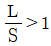
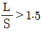
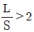
(정답률: 58%)
71. 아래 그림과 같은 단철근 직사각형 보에서 압축연단에서 중립축까지의 거리(c)는? (단, A＝3,000mm2, fck＝24MPa, fy＝400MPa)
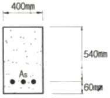
- 162mm
- 173mm
- 184mm
- 195mm
(정답률: 56%)
72. 콘크리트의 균열은 크게 굳지 않은 콘크리트의 균열과 굳은 콘크리트의 균열로 나눌 수 있다. 다음 중 굳은 콘크리트의 균열에 속하지 않는 것은?
- 건조수축으로 인한 균열
- 소성수축 균열
- 철근부식으로 인한 균열
- 외부의 작용하중으로 인한 균열
(정답률: 70%)
73. 다음 중 옹벽을 설계할 때 고려해야 하는 안정조건이 아닌 것은?
- 전도에 대한 안정
- 활동에 대한 안정
- 지반지지력에 대할 안정
- 벽체 좌굴에 대한 안정
(정답률: 67%)
74. 콘크리트 구조물의 재하시험에 대한 설명으로 틀린 것은?
- 재하시험을 수행하기 전에 해석적인 평가를 수행하여야 한다.
- 건물에서 부재의 안전성을 재하시험 결과에 근거하여 직접 평가할 경우에는 보, 슬래브 등과 같은 휨부재의 안전성 검토에만 적용할수 있다.
- 재하시험의 목적은 구조물 또는 부재의 실제 내하력을 정량화하여 안전성을 평가하기 위함이다.
- 재하시험은 하중을 받는 구조물 또는 부재의 재령이 14일 정도 지난 다음에 수행하여야 한다.
(정답률: 42%)
75. 보강공법 중에서 강판접착공법의 장점에 대한 설명으로 틀린 것은?
- 접착제의 내구성 및 내피로성이 확실하다.
- 강판을 사용하고 있으므로 모든 방향의 인장력에 대응할 수 있다.
- 강판의 분포, 배치를 똑같이 할 수 있으므로 균열특성이 좋다.
- 시공이 간단하고, 강판의 제작, 조립 등이 쉬워서 현장작업이 복잡하지 않다.
(정답률: 45%)
76. 콘크리트 염해에 대한 설명 중 틀린 것은?
- 콘크리트 내 함수율이 높을수록 염화물이온의 확산계수비는 커진다.
- 부식반응은 애노드반응과 캐소드반응이 조합된 반응이다.
- 염화물이온에 의한 철근부식은 산소와 수분, 중성화가 동반되어야만 발생한다.
- 해안에 가까울수록 염해가 발생할 가능성은 커진다.
(정답률: 50%)
77. 경간 10m의 대칭 T형보를 설계하려고 한다. 플랜지의 유효폭은? (단, 양쪽의 슬래브의 중심간 거리 3m, 플랜지 두께 150mm, 복부의 폭 300mm)
- 2,500mm
- 2700mm
- 2,800mm
- 3000mm
(정답률: 41%)
78. 콘크리트의 내화성에 관한 설명으로 가장 부적당한 것은?
- 콘크리트는 내화성이 우수하여 600℃ 정도의 화열을 받아도 압축강도의 저하는 거의 없다.
- 석회석이나 화강암 골재는 특히 내화성을 필요로 하는 장소의 콘크리트에 사용하지 않도록 한다.
- 화재피해를 받은 콘크리트의 중성화속도는 화재피해를 받지 않은 것과 비교하여 크다.
- 화재발생시 급격한 가열, 부재단면이 얇거나 콘크리트의 함수율이 높은 경우는 피복콘크리트의 폭렬이 발생하기 쉽다.
(정답률: 73%)
79. 균열폭 0.2mm 이하의 미세한 결함에 대해 탄성실링제를 이용하여 도막을 형성, 방수성 및 내화성을 확보할 목적으로 사용하는 구조물 보수공법은?
- 표면처리공법
- 단면증설공법
- 탄소섬유시트 접착공법
- 침투성 방수제 도포공법
(정답률: 69%)
80. b＝300mm, d＝500mm인 단철근 직사각형 철근 콘크리트 보에서 콘크리트가 부담할 수 있는 전단강도(kN)는? (단, fck＝25MPa, fy＝400MPa이고 보통(중량)콘크리트를 사용)
- 97kN
- 112kN
- 125kN
- 143kN
(정답률: 55%)